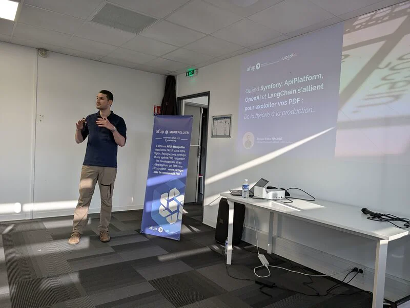
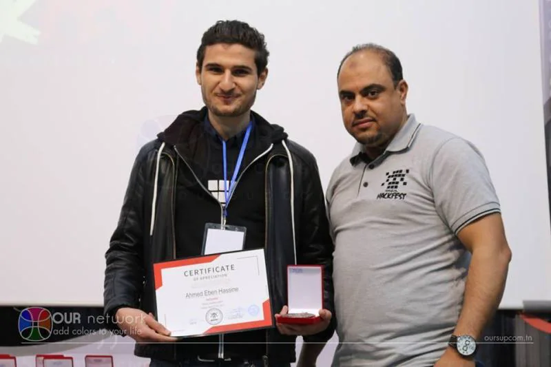

Site vitrine
Présenter votre savoir-faire avec clarté, renforcer votre crédibilité et transformer les visites en demandes qualifiées.
À partir de 3 200 €Sites web pour TPE et PME
Je transforme votre savoir-faire en un site clair, rapide et conçu pour générer des demandes, des réservations ou des ventes.
Vous gardez la main sur vos textes, images et tarifs, avec un back-office simple et un site construit pour durer.
Ahmed Eben Hassine15+ ans d'expérience · Votre interlocuteur senior unique, du premier échange à la mise en ligne.
Quel est votre besoin aujourd'hui ?
Premier échange gratuit · Réponse personnelle sous 24 h · Sans engagement
 Symfony CertifiedAdvanced Developer
Symfony CertifiedAdvanced Developer
 Ibexa CertifiedDeveloper
15+ ansd'expérience web
4 auditsremis à la livraison
Ibexa CertifiedDeveloper
15+ ansd'expérience web
4 auditsremis à la livraison
Interventions réalisées dans des contextes publics, privés, industriels, institutionnels et associatifs.




Une expertise visible et vérifiable
Vous n'êtes pas transmis d'un commercial à un chef de projet puis à un développeur. Je mène moi-même le cadrage, les choix techniques, la réalisation et la mise en ligne.
Un accompagnement complet
De la première réflexion à la mise en ligne, chaque décision sert votre image, vos clients et vos objectifs de développement.
Présenter votre savoir-faire avec clarté, renforcer votre crédibilité et transformer les visites en demandes qualifiées.
À partir de 3 200 €Permettre à vos clients de réserver, recevoir leurs rappels et régler un acompte dans un parcours fluide.
À partir de 5 700 €Vendre avec une boutique élégante, fiable et administrable, conçue autour de votre catalogue et de vos opérations.
À partir de 8 200 €Digitaliser un processus, connecter vos outils et offrir à vos équipes une interface réellement adaptée à leur quotidien.
Projet sur étudeModerniser un site vieillissant, améliorer sa vitesse, sa sécurité, son référencement ou reprendre une application existante.
Étudier mon besoinCe que vous achetez réellement
Vous échangez directement avec la personne qui analyse, conçoit et développe votre projet. Chaque choix reste compréhensible, documenté et relié à un objectif concret.
Des résultats contrôlés
Avant la mise en ligne, les points essentiels sont contrôlés et corrigés dans le périmètre du projet. À la livraison, vous recevez quatre rapports d'audit clairs qui documentent les vérifications et leurs résultats.
HTTPS, formulaires, protections navigateur, dépendances et points de vigilance.
Vitesse, Core Web Vitals et tests de charge adaptés au trafic attendu, avec mesure du comportement sous connexions simultanées.
Indexabilité, balises, contenus, mots-clés, maillage et recommandations.
Vérifications sur ordinateur, tablette, smartphones Android et iPhone.
Deux points d'entrée simples : créer un projet web complet ou intervenir sur votre application existante.
Pas sûr de votre choix ?
Écrivez-moi, je vous oriente.
Site vitrine, blog, back-office, réservation ou e-commerce sur mesure. Vous gardez la main sur vos données et vos contenus.
Audit, renfort d'équipe, CI/CD, performance, dette technique ou migration PHP/Symfony. TJM 499€ TTC/jour.
Projets open-source, certifications, contributions et expériences vérifiables.
Des points d'entrée simples pour décider vite, cadrer le budget et avancer sans zone floue.
Pour être mieux compris par Google et vos visiteurs : structure, pages importantes, balises, performance, indexation et opportunités de contenu.
Revue des écrans, messages, boutons, formulaires et parcours pour réduire les frictions et mieux convertir.
Pour renforcer une équipe, corriger une dette, migrer une application ou sécuriser une livraison web métier.
Pour créer un site administrable, un back-office, une API ou une brique métier avec une base technique maintenable.
Les briques que je peux assembler selon votre contexte, de la simple présence web à l'application métier plus avancée.
Trois interventions représentatives : le contexte, ce que j'ai fait, et ce que cela a changé.
Chiffre Ce que ce chiffre mesure.
Chiffre Ce que ce chiffre mesure.
Chiffre Ce que ce chiffre mesure.
Citation exacte de la personne, telle qu'elle vous l'a transmise.
Citation exacte de la personne, telle qu'elle vous l'a transmise.
Quelques liens publics pour vérifier mon activité technique et mes contributions.
Ce qu'il est légitime de vouloir savoir avant de confier un projet à un prestataire externe.
Une expérience vitrine démarre à 3 200 €, une solution de réservation à 5 700 € et un commerce en ligne à 8 200 €. Le périmètre, les livrables, le calendrier et le budget sont écrits dans le devis avant tout engagement.
Je n'impose pas un nombre de pages arbitraire. L'arborescence et le périmètre sont définis selon votre activité, vos contenus, vos objectifs et les langues nécessaires, puis inscrits clairement dans le devis. Le site reste évolutif et vous pouvez ensuite créer de nouveaux contenus depuis le back-office.
Vous pouvez fournir vos textes ou me confier leur structuration, leur rédaction ou leur reformulation selon les besoins définis au cadrage. Vous validez toujours la version finale avant sa publication.
Une maquette Figma vous est présentée et soumise à validation avant le développement. Elle permet de valider l'univers visuel, la hiérarchie des contenus et les principaux parcours avant l'intégration.
Le calendrier dépend du périmètre, des contenus, des langues, des fonctionnalités et des délais de validation. Une date cible, les différentes étapes et les moments où votre intervention est nécessaire sont annoncés dès le cadrage.
Oui. J'intègre les mentions légales et la politique de confidentialité que vous fournissez ou faites valider. Un dispositif de consentement est mis en place lorsque le site utilise des traceurs non essentiels. Cette intégration technique ne remplace pas un conseil juridique.
Oui. Le back-office rassemble les statistiques essentielles et les outils de référencement permettent de suivre l'indexation et la visibilité. Les mesures plus avancées, comme les sources d'acquisition ou les conversions, sont définies au cadrage selon vos objectifs.
Oui. Vous disposez d'un espace d'administration pour modifier textes, images, menus, tarifs et contenus sans toucher au code. Une formation et 30 jours d'accompagnement au lancement sont inclus.
La structure SEO, l'indexabilité, les métadonnées, le sitemap, les performances et les contrôles avant livraison sont inclus. Une stratégie de croissance continue peut ensuite être mise en place pour développer vos positions et vos contenus.
Le code vous appartient. Il est versionné sur votre dépôt Git, ou sur un dépôt que je vous transfère en fin de mission. Vous conservez l'accès complet à l'historique, aux environnements et à la documentation technique.
Le travail est documenté au fil de la mission, pas à la fin : architecture, choix techniques et procédures de déploiement sont écrits dans le dépôt. Un autre développeur Symfony peut reprendre sans dépendre de moi. La passation fait partie de la prestation.
Chaque besoin est formalisé en tickets numérotés dans votre outil de gestion, avec des critères d'acceptation. Vous voyez l'avancement en continu et vous recettez sur un environnement de test avant chaque mise en production. Le détail est décrit sur la page méthode de travail.
La recette client précède toute mise en production : vous validez sur un environnement de test avant que quoi que ce soit ne parte en ligne. Les ajustements sur les éléments livrés sont couverts par le premier mois de support correctif.
À distance, avec des points réguliers. J'interviens directement dans vos outils : dépôt Git, gestion de tickets, canaux d'équipe. Le premier échange se fait en visioconférence.
Par un appel de 30 minutes, gratuit et sans engagement, pour clarifier le besoin. Vous recevez ensuite un cahier des charges synthétique et un devis. Le cadrage et la planification ne sont facturés qu'une fois la mission engagée.
Parlons de votre besoin, du contexte technique et du meilleur format d'intervention freelance.
Premier échange sans engagement • Réponse sous 24h • Remote
Votre interlocuteur unique, du devis à la mise en ligne.
Ahmed
Si vous préférez écrire avant de réserver un appel, remplissez ces informations : je reçois votre message directement et vous réponds rapidement.